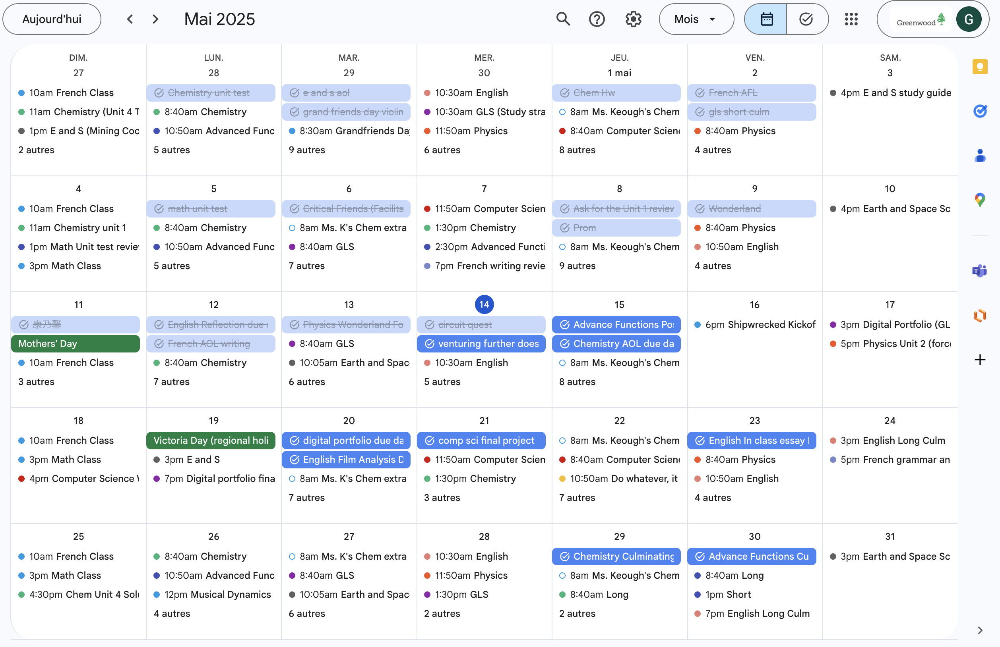

Intellectual Character
One area of success highlighted in my most recent report card is my ability to maintain a high level of achievement, which was supported by my excellent behavior and willingness to seek clarification and assistance when needed. I also took on a leadership role in group work and large group settings, which allowed me to further develop my communication and collaboration skills. Academically, I am proud of my 96 average, which shows my consistent effort and dedication. However, I still believe there is room for improvement, and I aim to push myself further to achieve an even higher average.
The success I’ve experienced in my courses can be attributed to several factors. I have a genuine interest in the subjects I am studying, and I am committed to understanding and applying the material. The curiosity, along with strategic review habits and independent study, played a major role in my academic performance. I also have a clear understanding of how to effectively prepare for assessments, which helps me stay confident and well-prepared.
In terms of areas of growth, my French class is definitely the only one. While I have maintained a steady performance, I recognize that there is room for great improvement—particularly in my speaking and listening skills. Reinforcing in these areas is a key focus for me moving forward.

French is also the one course I find most challenging. To address this, I have set a SMART goal for myself: by the end of this term, I aim to improve my oral French skills by attending at least one extra help session each week and practicing speaking for ten minutes a day. To support this goal and my overall learning, I also rely on a structured weekly calendar to organize my study time, track deadlines, and plan when I’ll attend extra support sessions.
